flowchart LR
A(Paso 1: Recopilación de conjunto de datos) --> B(Paso 2: Preprocesamiento de conjunto de datos)
B(Paso 2: Preprocesamiento de conjunto de datos) --> C(Paso 3: Entrenamiento del modelo)
C(Paso 3: Entrenamiento del modelo) --> D(Paso 4: Evaluación del modelo)
D(Paso 4: Evaluación del modelo) --> B(Paso 2: Preprocesamiento de conjunto de datos)
D(Paso 4: Evaluación del modelo) --> C(Paso 3: Entrenamiento del modelo)
D(Paso 4: Evaluación del modelo) --> A(Paso 1: Recopilación de conjunto de datos)
Introducción
El aprendizaje automático puede parecer intimidante para aquellos que son nuevos en este campo. Este post tiene como objetivo familiarizar a los lectores con los fundamentos del aprendizaje automático y hacer que se dé cuenta de lo maravilloso que es este tema. Ey, date cuenta! Vamos a explorar los conceptos preliminares del aprendizaje automático y establecer los fundamentos para aprender conceptos avanzados. Primero, los conceptos básicos del aprendizaje automático y algunas perspectivas sobre la inteligencia artificial y el aprendizaje profundo (deep learning). Luego, la evolución gradual del aprendizaje automático a lo largo de la historia, en orden cronológico desde 1940 hasta la actualidad. Después, veremos la motivación, el propósito y la importancia del aprendizaje automático en función de algunas aplicaciones prácticas en la vida real. A continuación, se introduce el conocimiento previo necesario para dominar el aprendizaje automático, para asegurarse de que los lectores sean conscientes qué necesitan saber antes de comenzar su curso sobre aprendizaje automático. Finalmente discutimos los lenguajes de programación y herramientas asociadas necesarias para utilizar el aprendizaje automático. Todo es lo hacemos utilizando R como lenguaje de programación, RStudio como editor de código o compilador, y esta escrito en documento de Quarto (.qmd). Antes de la conclusión, revisamos algunos ejemplos reales de aprendizaje automático que todos los lectores de ingeniería podrán relacionar, lo que despertará su curiosidad para entrar en el mundo del aprendizaje automático.
Qué es Machine Learning?
La tecnología moderna está mejorando y acelerándose gracias a la investigación, experimentación y desarrollo extensivos y continuos. Por ejemplo, las máquinas están volviéndose inteligentes y realizan tareas de manera mucho más eficiente. El aprendizaje automático ha estado evolucionando a un ritmo sin precedentes, y los resultados son evidentes en nuestros teléfonos y computadoras, que se están convirtiendo en más multifuncionales cada día, los sistemas de automatización están volviéndose omnipresentes, se están construyendo robots inteligentes y así sucesivamente.
En 1959, el científico de la computadora y pionero del aprendizaje automático Arthur Samuel definió el aprendizaje automático como el “campo de estudio que le da a los ordenadores la capacidad de aprender sin ser programados explícitamente”. El libro de Tom Mitchell de 1997 sobre aprendizaje automático definió el aprendizaje automático como “el estudio de los algoritmos de computadora que permiten a los programas de computadora mejorar automáticamente a través de la experiencia”. Define el aprendizaje de la siguiente manera: “Un programa de computadora se dice que aprende de la experiencia E con respecto a alguna clase de tareas T y medida de rendimiento P, si su rendimiento en tareas en T, medido por P, mejora con la experiencia E”. El aprendizaje automático (ML) es una rama del aprendizaje artificial (AI) que permite a los ordenadores y máquinas aprender de la información existente y aplicar ese aprendizaje para realizar otras tareas similares. Sin programación explícita, la máquina aprende a partir de los datos que se le proporcionan. La máquina identifica o aprende patrones, tendencias o características esenciales a partir de datos previos y hace una predicción sobre nuevos datos. Un ejemplo de aplicación real del aprendizaje automático es los sistemas de recomendación. Por ejemplo, un sitio de streaming de películas recomendará películas al usuario basadas en su lista de películas vistas previamente.
Los algoritmos de ML se clasifican ampliamente como aprendizaje supervisado y aprendizaje no supervisado, con otros tipos como el aprendizaje por refuerzo y aprendizaje semisupervisado. Lo más seguro es que tendrás otros posts sobre estos temas.
Flujo de trabajo de Machine Learning
Antes de profundizar en los detalles, un principiante debe tener una visión holística del flujo de trabajo completo del aprendizaje automático. La visión general del proceso revela que hay cuatro pasos principales en un flujo de trabajo típico de ML: recopilación de conjuntos de datos, preprocesamiento de datos, entrenamiento del modelo y, finalmente, evaluación del modelo. La figura 1 muestra el diagrama de bloques de los cuatro pasos del flujo de trabajo de ML. Estos pasos se siguen generalmente en todas las aplicaciones de ML:
Recopilación de conjuntos de datos: El primer paso del ML es recopilar el conjunto de datos. Este paso depende del tipo de experimentos o proyectos que se desean realizar. Diferentes experimentos o proyectos requieren diferentes datos. También se debe decidir qué tipo de datos se requieren. ¿Serán datos numéricos o categóricos? Por ejemplo, si queremos realizar una predicción sobre los precios de las casas, necesitaríamos la siguiente información: el precio de las casas, la dirección de las casas, el número de habitaciones, el estado de la casa, el tamaño de la casa, etc. Luego surge la pregunta: ¿qué unidad de precio debería ser? ¿Dólares, libras o alguna otra moneda?
Preprocesamiento de datos: Los datos que recopilamos a menudo están desorganizados y no pueden ser utilizados directamente para entrenar modelos. Antes de proceder al siguiente paso, los datos necesitan ser preprocesados. Primero, el conjunto de datos puede contener datos faltantes o ruidosos. Este problema necesita ser resuelto antes de pasar los datos al modelo. Diferentes datos pueden estar en diferentes rangos, lo que podría ser un problema para los modelos, por lo que los datos necesitan ser estandarizados para que todos los datos estén en el mismo rango. Además, no todos los datos serían igualmente importantes para predecir la variable objetivo. Necesitamos encontrar y seleccionar los datos que contribuyen más a encontrar las variables objetivo. Finalmente, el conjunto de datos debe ser dividido en dos conjuntos: el conjunto de entrenamiento y el conjunto de prueba. La división se hace generalmente en una relación de 80:20, donde el 80% del conjunto de datos es el conjunto de entrenamiento y el 20% es el conjunto de prueba. Esta relación puede variar según el tamaño del conjunto de datos y la naturaleza del problema. Aquí, el conjunto de entrenamiento se utilizará para entrenar los modelos, y el conjunto de prueba se utilizará para evaluar los modelos. A menudo, el conjunto de datos se divide en conjuntos de entrenamiento, validación y prueba. El conjunto de validación se utiliza para ajustar los hiperparámetros, lo que se discutirá en el Capítulo 2 de este libro. La figura 2 muestra los diferentes pasos de preprocesamiento de datos. Estos pasos se explicarán en el Capítulo 3.
Entrenamiento del modelo: Basado en el problema, se debe seleccionar el tipo de modelo requerido primero. Mientras se selecciona el modelo, se debe considerar la información disponible sobre el conjunto de datos. Por ejemplo, la clasificación supervisada se puede abordar si el conjunto de datos contiene información sobre ambos valores de entrada y salida. A veces, se necesitan utilizar más de un modelo para entrenar y hacer el trabajo. El modelo ajusta o aprende los datos. Este paso es muy importante porque el rendimiento del modelo depende mucho de cómo bien los datos han sido ajustados o aprendidos por el modelo. Mientras se entrena el modelo, se debe tener cuidado de no subajustar o sobreadjustar el modelo. Subajustar y sobreadjustar se han explicado en el Capítulo 2.
Evaluación del modelo: Una vez que el modelo se ha construido y entrenado, es esencial entender cómo bien se ha entrenado el modelo, cómo bien funcionará y si el modelo será útil para el experimento. Sería inútil si el modelo no funciona bien o no cumple con su propósito. Por lo tanto, se utiliza el conjunto de prueba para probar el modelo, y se utilizan diferentes métricas de evaluación para evaluar y comprender el modelo. Las métricas de evaluación incluyen precisión, recall y algunas otras, que se utilizan para obtener una visión general de cómo bien funcionará el modelo. Las métricas de evaluación se han discutido en el Capítulo 2. Basado en la evaluación del modelo, puede ser necesario regresar a los pasos anteriores y realizarlos de nuevo según sea necesario.
flowchart LR
A["`**Prepocesamiento de Datos**`"] --> B("`**Integración de Datos**
- Integración de esquemas
- Problema de identificación de entidad
- Detección y resolución de conceptos de valores de datos`")
A["`**Prepocesamiento de Datos**`"] --> C("`**Reducción de Datos o Dimensión**
- Agregación de cubo de Datos
- Selección de subconjunto de Atributos
- Reducción de numerosidad
- Reducción de dimensionalidad`")
A["`**Prepocesamiento de Datos**`"] --> D("`**Transformación de Datos**
- Normalización
- Selección de Atributos
- Discretización
- Generación de Jerarquía de Conceptos`")
A["`**Prepocesamiento de Datos**`"] --> E("`**Limpieza de Datos**
- Datos faltantes
- Datos ruidosos`")
Qué no es Machine Learning?
El aprendizaje automático es un término en boga en el mundo actual. Casi todos los campos de la ciencia y la tecnología involucran uno o más aspectos del ML. Sin embargo, es necesario distinguir entre lo que es ML y lo que no lo es. Por ejemplo, el programar en sentido general no es ML, ya que un programa explícitamente indica o instruye a una máquina qué hacer y cuándo hacerlo sin permitir que la máquina aprenda por sí misma y aplique el aprendizaje en un entorno similar pero nuevo. Un sistema de recomendación que está diseñado explícitamente para dar recomendaciones no es una aplicación de ML. Si el sistema está diseñado de manera que se le dé un conjunto específico de películas como condiciones y se le sugiera una película explícitamente, como:
Si la persona ha visto Harry Potter o Pirates of the Caribbean o El Señor de los Anillos, entonces recomiende Animales Fantásticos a la persona. También si la persona ha visto Divergente o Maze Runner, recomiende Juegos del Hambre.
Este sistema de recomendación no es una aplicación de ML. Aquí, la máquina no explora ni aprende tendencias, características o características de películas previamente vistas. En su lugar, simplemente se basa en las condiciones dadas y sugiere la película dada. Para un sistema de recomendación basado en ML, el programa no indica explícitamente al sistema qué película recomendar basada en la lista de películas vistas previamente. En su lugar, se programa de manera que el sistema explore la lista de películas vistas previamente. Busca características significativas o características como géneros, actores, directores, productores, etc. También verifica qué películas han sido vistas por otros usuarios para que el sistema pueda formar un tipo de grupo. Basado en este aprendizaje y observación, el sistema concluye y da una recomendación. Por ejemplo, la lista de películas de una persona es como sigue: Sully, Catch Me If You Can, Captain Philips, Inception y Interstellar. Se pueden extraer las siguientes conclusiones de esta lista:
• Tres de las películas son de género biográfico; las otras dos son de ciencia ficción.
• Tres de las películas tienen a Tom Hanks en ellas.
• Las películas de ciencia ficción en la lista están dirigidas por Christopher Nolan.
Basado en este patrón, el sistema puede recomendar películas biográficas que no incluyan a Tom Hanks. El sistema también recomendará más películas de Tom Hanks que pueden ser biográficas o de otros géneros. También puede recomendar películas de ciencia ficción que hayan estrellado a Tom Hanks. El sistema también recomendará más películas dirigidas por Christopher Nolan. Como este sistema decide por aprender los patrones de la lista de películas vistas, se considerará una aplicación de ML.
Jerga de Machine Learning
Mientras vamos a través estos posts, vamos a encontrar muchos términos relacionados con el aprendizaje automático. Por lo tanto, es esencial que entendamos este jargon. Los términos que necesitamos entender se discuten en esta sección.
Características
Las características, también conocidas como atributos, variables predictivas o variables independientes, son simplemente las características o etiquetas del conjunto de datos. Supongamos que tenemos información sobre la altura y el peso de sesenta estudiantes en una clase. La altura y el peso son conocidos como características dentro del conjunto de datos. Estas características se extraen del conjunto de datos bruto y se alimentan a los modelos como entradas.
Variable objetivo
Simplemente, las variables objetivo son los outputs que los modelos deben dar. Por ejemplo, una reseña de película debe clasificarse como positiva o negativa. Aquí, la variable positiva/negativa es la variable objetivo en este caso. Primero, esta variable objetivo debe ser determinada por el usuario. Luego, después de que se determine la variable objetivo, se debe entender la relación entre las características y la variable objetivo para realizar operaciones adicionales.
Problema de optimización
Los problemas de optimización se definen como una clase de problemas que buscan la solución óptima bajo un conjunto de condiciones dadas. Estos problemas suelen involucrar un trade-off entre diferentes condiciones. Por ejemplo, un batería debe ser comprada para respaldo de energía en una residencia, pero estamos indecisos sobre el tamaño adecuado de la batería, que viene en \(6.4\) y \(13.5\) kWh. Si compramos el tamaño más grande, podemos almacenar más energía y disfrutar de una variedad de características adicionales de la batería, pero también debemos pagar más. Si compramos el tamaño más pequeño, podemos almacenar menos energía y obtener poco o nada de características adicionales, pero ahorraremos más dinero. Necesitamos optimizar nuestras necesidades en este escenario. Si solo requerimos respaldo de energía sin requisitos especiales para las características adicionales, el tamaño más pequeño será suficiente para satisfacer la necesidad. Esto sería la solución óptima para el dilema de la batería.
Función objetivo
Generalmente, más de una solución existe para un problema. Entre todas las soluciones, se requiere encontrar la solución óptima, lo que se hace usualmente midiendo una cantidad y requiriendo que se ajuste a un estándar. La función objetivo es el estándar que la solución óptima debe cumplir. La función objetivo se diseña para tomar parámetros y evaluar el rendimiento de la solución. El objetivo de la función objetivo puede variar según el problema en consideración. Maximizar o minimizar un parámetro particular puede ser necesario para calificar la solución como óptima. Por ejemplo, muchos algoritmos de aprendizaje automático utilizan una medida de distancia (Euclideana, Manhattan o Minkowski) como función objetivo.
Función de costo
La función de costo se utiliza para entender cómo bien se desempeña el modelo en un conjunto de datos dado. La función de costo también calcula la diferencia entre los valores de salida predichos y los valores de salida reales. Por lo tanto, la función de costo y la función de pérdida pueden parecer similares. Sin embargo, la función de pérdida se calcula para un solo punto de datos después de un solo entrenamiento, y la función de costo se calcula para un conjunto de datos dado después de que se complete el entrenamiento del modelo. Por lo tanto, se puede inferir que la función de costo es la función de pérdida promedio para el conjunto de datos completo después del entrenamiento del modelo. Los términos función de pérdida y función de costo se utilizan a menudo de manera intercambiable en el aprendizaje automático. Al igual que las funciones de pérdida, se utilizan diferentes tipos de funciones de costo en diferentes contextos y algoritmos de aprendizaje automático.
Supongamos que \(J\) es una función de costo utilizada para evaluar el rendimiento de un modelo. Generalmente se define con la función de pérdida \(L\). La forma generalizada de la función de costo \(J\) se da a continuación:
\[ J(𝛳)=∑^m_{i=1}L(h_{𝛳}(x^i),y^i) \tag{1}\]
Donde \(θ\) es un parámetro que se está optimizando, \(m\) es el número de muestras de entrenamiento, \(i\) es el número de ejemplos y salidas, \(h\) es la función de hipótesis del modelo, \(x\) es el valor predicho estimado, \(y\) es el valor verdadero (ground truth value).
Función de pérdida
Supongamos que se da una función \(L : (z, y) ∈ ℝ × Y → L(z, y) ∈ ℝ\). La función \(L\) toma \(z\) como entradas, donde \(z\) es el valor predicho proporcionado por un modelo de aprendizaje automático. La función luego compara \(z\) con respecto a su valor real correspondiente \(y\) y produce un valor que indica la diferencia entre el valor predicho y el valor real. Esta función se conoce como una función de pérdida.
La función de pérdida es significativa porque explícitamente explica cómo los modelos se desempeñan al modelar los datos que se les están proporcionando. La función de pérdida calcula el error, que es la diferencia entre el valor de salida predicho y el valor de salida real. Por lo tanto, es intuitivo que un valor más bajo de la función de pérdida indica un valor de error más bajo, lo que implica que el modelo ha aprendido o ajustado los datos bien. Mientras se aprenden los datos, el objetivo del entrenamiento del modelo es siempre reducir el valor de la función de pérdida.
Después de cada iteración de entrenamiento, el modelo sigue haciendo cambios necesarios basados en el valor de la función de pérdida actual para minimizarla. Se utilizan diferentes tipos de funciones de pérdida para diferentes algoritmos de aprendizaje automático.
Comparación entre la función de pérdida, la función de costo y la función objetivo
Ambas, la función de pérdida y la función de costo, representan el valor de error, es decir, la diferencia entre el valor de salida y el valor real, para determinar cómo de bien un modelo de aprendizaje automático se desempeña al ajustarse a los datos. Sin embargo, la diferencia entre las funciones de pérdida y costo es que la función de pérdida mide el error para un solo punto de datos solo, mientras que la función de costo mide el error para todo el conjunto de datos. La función de costo suele ser la suma de la función de pérdida y algún tipo de penalización.
Por otro lado, la función objetivo es una función que necesita ser optimizada, es decir, maximizada o minimizada, para obtener el objetivo deseado. La función de pérdida es parte de la función de costo; al mismo tiempo, la función de costo se puede utilizar como parte de la función objetivo.
En resumen, la función de pérdida mide el error para un solo punto de datos, la función de costo mide el error para todo el conjunto de datos y la función objetivo es una función que necesita ser optimizada para obtener el objetivo deseado.
Algoritmo, modelo/hipótesis y técnica
Como principiante, es esencial poder diferenciar entre modelos y algoritmos de aprendizaje automático. Un algoritmo en ML es la instrucción paso a paso proporcionada en forma de código y ejecutada en un conjunto de datos específico. Este algoritmo es análogo a un código de programación general. Por ejemplo, encontrar el promedio aritmético de un conjunto de números. De manera similar, en ML, un algoritmo se puede aplicar para aprender las estadísticas de un conjunto de datos o aplicar estadísticas actuales para predecir cualquier dato futuro.
Por otro lado, un modelo de ML puede ser representado como un conjunto de parámetros que se aprenden a partir de datos dados. Por ejemplo, supongamos una función \(f (x) = xθ\), donde \(θ\) es el parámetro de la función dada y \(x\) es la entrada. Así, para una entrada \(x\) dado, el output depende del parámetro de la función \(θ\). De manera similar, en ML, la entrada \(x\) se etiqueta como la característica de entrada, y \(θ\) se define como un parámetro de modelo de ML. El objetivo de cualquier algoritmo de ML es aprender el conjunto de parámetros de un modelo dado. En algunos casos, el modelo también se conoce como una hipótesis. Supongamos que la hipótesis o modelo se denota por \(h_θ\). Si se ingiere datos \(x(i)\) al modelo, el output predicho será \(h_θ (x(i))\).
En contraste, una técnica de ML puede verse como un enfoque general para intentar resolver un problema en particular. En muchos casos, puede ser necesario combinar una amplia variedad de algoritmos para desarrollar una técnica para resolver un problema de ML.
Diferencia entre la ciencia de datos, el aprendizaje automático, la inteligencia artificial y el aprendizaje profundo
La ciencia de datos (DS), la inteligencia artificial (AI), el aprendizaje automático (ML) y el aprendizaje profund (DL) o son términos relacionados estrechamente, y las personas suelen confundirlos o utilizarlos de manera alternativa. Sin embargo, estos son campos de tecnología claramente separados. El aprendizaje automático cae dentro del subconjunto de la inteligencia artificial, mientras que el aprendizaje profundo se considera que cae dentro del subconjunto del aprendizaje automático, como se demuestra en la Fig. 3.
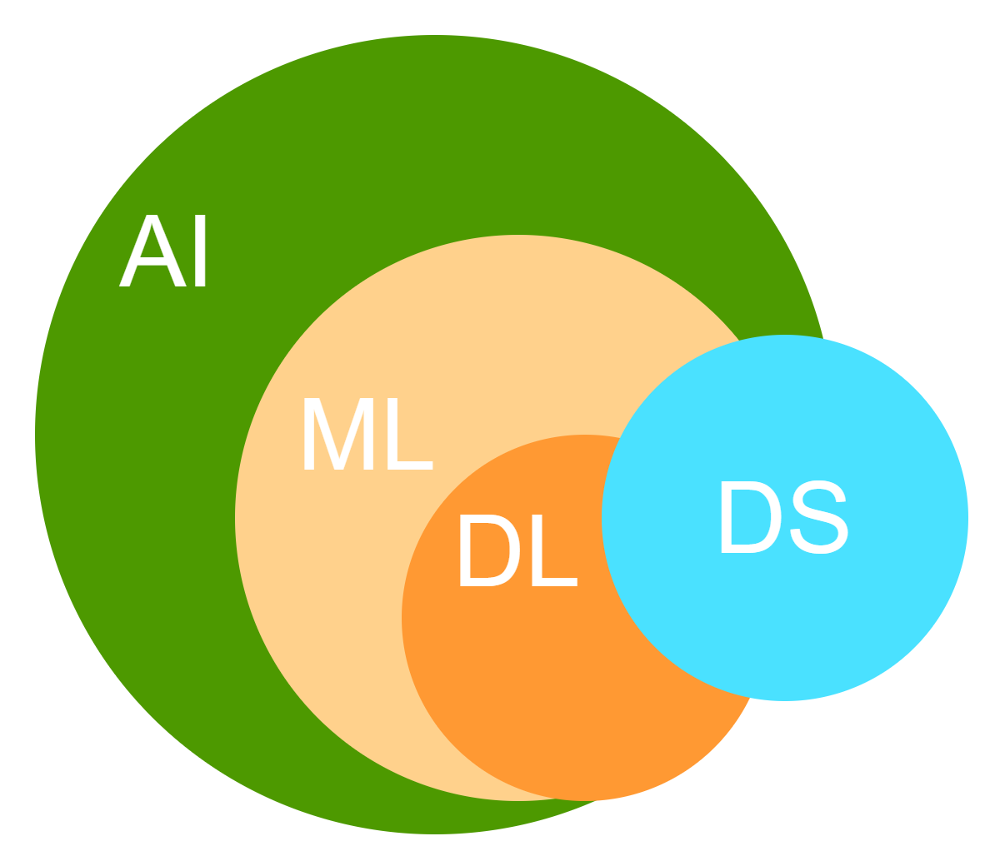
La diferencia entre el aprendizaje automático y el aprendizaje profundo radica en el hecho de que el aprendizaje profundo requiere más recursos de computación y conjuntos de datos muy grandes. Gracias al avance de los recursos de computación en hardware, las personas están pasando hacia enfoques de aprendizaje profundo para resolver problemas similares que el aprendizaje automático puede resolver. El aprendizaje profundo es especialmente útil para manejar grandes volúmenes de texto o imágenes.
La ciencia de datos es un campo interdisciplinario que implica identificar patrones en los datos y hacer inferencias, predicciones o insights a partir de ellos. La ciencia de datos está estrechamente relacionada con el aprendizaje profundo, el minería de datos y los grandes datos. Aquí, la minería de datos es el campo que se ocupa de identificar patrones y extraer información de conjuntos de datos grandes utilizando técnicas que combinan estadística, sistemas de bases de datos y ML, y por definición, los grandes datos se refieren a datos vastos y complejos que son demasiado grandes para ser procesados por sistemas tradicionales utilizando algoritmos tradicionales. El ML es una de los principales herramientas utilizadas para ayudar al proceso de análisis de datos en la ciencia de datos, especialmente para hacer extrapolaciones o predicciones sobre tendencias futuras de datos.
Por ejemplo, predecir el precio del mercado de casas en el próximo año es una aplicación de ML. Considere un conjunto de datos de muestra como se muestra en la tabla 1.1.
| Año | Precio |
|---|---|
| 2001 | $200 |
| 2002 | $400 |
| 2003 | $800 |
La observación de los datos en la tabla 1.1 nos permite formar la intuición de que el próximo precio en 2004 será de $1600. Esta intuición se forma basada en los precios de las casas de los años anteriores, que muestran una tendencia clara de duplicar el precio cada año.
Sin embargo, para conjuntos de datos grandes y complejos, esta predicción no puede ser tan sencilla. Luego, requerimos un modelo de predicción de ML para predecir los precios de las casas.
Con suficientes recursos de computación, estos problemas pueden ser resueltos utilizando modelos de aprendizaje profundo categorizados bajo aprendizaje profundo. En general, el aprendizaje automático y el aprendizaje profundo caen dentro de la inteligencia artificial, pero todos requieren el procesamiento, preparación y limpieza de los datos disponibles; por lo tanto, la ciencia de datos es una parte integral de todos estos tres ramas.
Desarrollo histórico de Machine Learning
El aprendizaje automático ha estado en desarrollo desde la década de 1940. No es el fruto de la mente de un humano ingenioso ni el resultado de un evento en particular. La ciencia multifacética del aprendizaje automático ha sido moldeada por años de estudios y investigación, y por los esfuerzos dedicados de numerosos científicos, ingenieros, matemáticos, programadores, investigadores y estudiantes. El aprendizaje automático es un campo en constante progreso y sigue en desarrollo. La tabla 1.2 enumera los hitos más significativos marcados en la historia del desarrollo del aprendizaje automático. No te asustes si no conoces aún algunos de los términos mencionados en la tabla. Los exploraremos más adelante.
| Año | Desarrollo |
|---|---|
| 1940s | El artículo “A logical calculus of the ideas immanent in nervous activity”, credao por Walter Pitts y Warren McCulloch en 1943, es el primero en discutir el modelo matemático de redes neuronales. |
| 1950s | • El término “Aprendizaje Automático” es utilizado por primera vez por Arthur Samuel. Diseñó un programa de ajedrez por computadora que estaba a la altura de los juegos de nivel superior. • En 1951, Marvin Minsky y Dean Edmonds desarrollaron la primera red neuronal artificial compuesta por 40 neuronas. La red neuronal tenía capacidades de memoria a corto y largo plazo. • El taller de dos meses en Dartmouth en 1956 introduce por primera vez la investigación en Inteligencia Artificial (IA) y Aprendizaje Automático (AA). Muchos reconocen este taller como el “lugar de nacimiento de la IA”. |
| 1960s | • En 1960, Alexey (Oleksii) Ivakhnenko y Valentin Lapa presentan la representación jerárquica de una red neuronal. Alexey Ivakhnenko se considera el padre del aprendizaje profundo. • Thomas Cover y Peter E. Hart publicaron un artículo sobre los algoritmos de vecino más cercano en 1967. Estos algoritmos se utilizan ahora para tareas de regresión y clasificación en el aprendizaje automático. • Un proyecto relacionado con un robot inteligente, Stanford Cart, comenzó en esta década. El objetivo era navegar a través de un espacio 3D de manera autónoma. |
| 1970s | • Kunihiko Fukushima, un científico informático japonés, publicó un trabajo sobre reconocimiento de patrones utilizando redes neuronales jerárquicas y multilayered. Este trabajo más tarde sentó las bases para las redes neuronales convolucionales. • El proyecto Stanford Cart finalmente logró recorrer una habitación llena de sillas durante cinco horas sin intervención humana en 1979. |
| 1980s | • En 1985, se inventa la red neuronal artificial llamada NETtalk por Terrence Sejnowski. NETtalk puede simplificar modelos de tareas cognitivas humanas de manera que las máquinas puedan aprender a hacerlas. • La máquina de Boltzmann restringida (RBM), inicialmente llamada Harmonium, inventada por Paul Smolensky, se introduce en 1986. Puede analizar un conjunto de entrada y aprender distribución de probabilidades a partir de él. En la actualidad, la RBM modificada por Geoffrey Hinton se utiliza para modelado de temas, recomendaciones impulsadas por inteligencia artificial, clasificación, regresión, reducción de dimensionalidad, filtrado colaborativo, etc. |
| 1990s | • El boosting para el aprendizaje automático se introduce en el papel “The Strength of Weak Learnability”, creado por Robert Schapire y Yoav Freund en 1990. El algoritmo de boosting aumenta la capacidad predictiva de los modelos de inteligencia artificial. El algoritmo genera y combina muchos modelos débiles utilizando técnicas como la media o la votación en las predicciones. • En 1995, Tin Kam Ho introduce bosques de decisiones aleatorios en su artículo. El algoritmo crea múltiples árboles de decisión aleatoriamente y los combina para crear un “bosque”. El uso de múltiples árboles de decisión mejora significativamente la precisión de los modelos. • En 1997, Christoph Bregler, Michele Covell y Malcolm Slaney desarrollan el software “deepfake” más antiguo del mundo. • El año 1997 será un hito importante en el AI. El programa de ajedrez basado en IA, Deep Blue, derrotó a uno de los mejores jugadores de ajedrez de la historia humana, Garry Kasparov. Este incidente arrojó nueva luz sobre la tecnología de IA. |
| 2000 | Igor Aizenberg, un investigador de redes neuronales, introduce por primera vez el término “aprendizaje profundo”. Utilizó este término para describir las redes más grandes compuestas por neuronas de umbral booleano. |
| 2009 | Fei-Fei Li lanzó el conjunto de datos más extenso de imágenes etiquetadas, ImageNet. Fue diseñado para contribuir a proporcionar datos de entrenamiento versátiles y reales para modelos de IA y ML. The Economist ha comentado sobre ImageNet como un evento excepcional para popularizar la IA a lo largo de la comunidad tecnológica y dar un paso hacia un nuevo era de historia del aprendizaje profundo. |
| 2011 | El equipo de X Lab de Google desarrolla un algoritmo de inteligencia artificial llamado Google Brain para el procesamiento de imágenes, que es capaz de identificar gatos en imágenes. |
| 2014 |
|
| 2015 | El primer programa de IA “AlphaGo” supera a un jugador profesional de Go. Go era un juego que inicialmente era imposible enseñar a una computadora. |
| 2016 | Un grupo de científicos presenta Face2Face durante la Conferencia sobre Visión por Computadora y Reconocimiento de Patrones. La mayoría del software “deepfake” utilizado en la actualidad se basa en la lógica y los algoritmos de Face2Face. |
| 2017 |
|
| 2021 | Google DeepMind’s AlphaFold 2 model places first in the CASP13 protein folding competition in the free modeling (FM) category, bringing a breakthrough in deep-learning-based protein structure prediction. |
| 2022 | OpenAI y Google revolucionan los modelos de lenguaje grande para uso masivo. Diversas aplicaciones del aprendizaje automático han comenzado a convertirse en parte de las actividades diarias. |
Por qué Machine Learning?
Antes de profundizar más, es importante tener una visión clara de la finalidad y los motivos detrás del aprendizaje automático. Por lo tanto, las secciones siguientes discutirán la finalidad, los motivos y la importancia del aprendizaje automático para que pueda implementarse en escenarios de vida real.
Motivación
La motivación para crear un campo multidimensional como el aprendizaje automático surgió del trabajo monótono que los seres humanos tenían que realizar. Con el aumento del uso de sistemas de comunicación digital, dispositivos inteligentes y la Internet, se generan grandes cantidades de datos cada momento. Buscar y organizar todos esos datos cada vez que se necesita resolver un tarea es exhaustivo, tiempo consumidor y monótono. Por lo tanto, en lugar de ir a través del proceso laborioso de revisar billones de datos, los seres humanos optaron por un proceso más automatizado. El proceso automatizado busca encontrar patrones relevantes en los datos y luego utilizar estos patrones para evaluar y resolver tareas. Fue entonces cuando surgió el concepto de programación. Sin embargo, incluso con la programación, los seres humanos tenían que codificar explícitamente o instruir a las máquinas sobre qué hacer, cuándo y cómo hacerlo. Para superar el nuevo problema de codificar cada comando para que las máquinas lo entiendan, los seres humanos desarrollaron la idea de hacer que las máquinas aprendieran ellas mismas de la manera en que los seres humanos lo hacen - simplemente reconociendo patrones.
Propósito
El propósito del aprendizaje automático es hacer que las máquinas inteligentes y automatizar tareas que de otra manera serían tediosas y propensas a errores humanos. El uso de modelos de aprendizaje automático puede hacer que las tareas sean más accesibles y eficientes en el tiempo.
Por ejemplo, considere un conjunto de datos \((x, y) = (0, 0);(1, 1);(2, 2);(3, ?)\). Aquí, para definir la relación entre \(x\) y \(y\), \(y\) se puede expresar como una función de \(x\), es decir, \(y = f (x) = θ x\). Esta representación de los dos elementos del conjunto de datos se conoce como el modelo. El propósito del aprendizaje automático es aprender qué es \(θ\) a partir de los datos existentes y luego aplicar el aprendizaje automático para determinar que \(θ = 1\). Este conocimiento se puede utilizar luego para encontrar el valor del valor desconocido de \(y\) cuando \(x = 3\). Seguro aprenderás cómo formular el modelo hipotético y cómo resolver los valores de \(θ\).
Importancia
Al igual que las máquinas, la ciencia del aprendizaje automático se creó con el fin de hacer que las tareas humanas más fáciles. El análisis de datos era un trabajo tedioso y laborioso, propenso a muchos errores cuando se hacía manualmente. Pero gracias al aprendizaje automático, todos los seres humanos tienen que hacer es proporcionar la máquina con el conjunto de datos o la fuente del conjunto de datos, y la máquina puede analizar los datos, reconocer un patrón y tomar decisiones valiosas sobre los datos.
Otra ventaja del aprendizaje automático es que los seres humanos no necesitan decirle a la máquina cada paso del trabajo. La máquina misma genera las instrucciones después de aprender de la entrada del conjunto de datos. Por ejemplo, un modelo de reconocimiento de imágenes no requiere decirle a la máquina sobre cada objeto en una imagen. En el caso del aprendizaje supervisado, solo necesitamos decirle a la máquina sobre los etiquetas (como vaca o perro) junto con sus atributos (como proporciones faciales, tamaño del cuerpo, tamaño de las orejas, presencia de cuernos, etc.), y la máquina identificará automáticamente los objetos etiquetados en cualquier imagen basada en los atributos marcados.
El aprendizaje automático también es esencial en el caso de la predicción de tendencias de datos desconocidos o futuras. Esta aplicación es extremadamente valiosa para crear planes de negocio y esquemas de marketing, y preparar recursos para el futuro. Por ejemplo, el aprendizaje automático puede ayudar a predecir el crecimiento futuro de las instalaciones de módulos solares, incluso hasta 2050 o 2100, basado en tendencias históricas de precios. En comparación con otras herramientas de predicción y técnicas, el aprendizaje automático puede predecir valores con mayor precisión y considerar muchos parámetros adicionales que no se pueden incorporar en fórmulas de predicción definidas utilizadas en herramientas de predicción tradicionales, como la extrapolación de datos estadísticos.
Conocimientos previos para aprender Machine Learning
El aprendizaje automático es una ciencia avanzada; una persona no puede simplemente sumergirse en el mundo del ML sin tener algún conocimiento y habilidades básicos. Para poder entender los conceptos de ML, utilizar los algoritmos y aplicar técnicas de ML en casos prácticos, una persona debe estar equipada con varios temas en matemáticas y ciencias avanzadas, algunos de los cuales se discuten en las siguientes secciones.
Esta sección muestra solo los temas que un entusiasta de ML debe conocer antes de aprender ML. Los temas no se cubren en detalle aquí.
Álgebra Lineal
La álgebra lineal es la rama de matemáticas que se ocupa de las transformaciones lineales. Estas transformaciones lineales se realizan utilizando ecuaciones lineales y funciones lineales. Vectores y matrices se utilizan para notar las ecuaciones lineales y funciones lineales necesarias. Una buena base en álgebra lineal es requerida para entender la intuición más profunda detrás de diferentes algoritmos de ML. Es la base para resolver problemas como aquel de nuestra app de mantenimiento.
Ecuaciones Lineales
Las ecuaciones lineales son más fáciles de describir matemáticamente y pueden combinarse con transformaciones de modelos no lineales. Hay dos propiedades de una ecuación para ser denominada lineal - homogeneidad y superposición. El conocimiento de ecuaciones lineales puede ser conveniente para modelar sistemas lineales. Un ejemplo de ecuación lineal es \(p_1x_1 + p_2x_2 + ... + p_nx_n + q = 0\), donde \(x_1, x_2 ..., x_n\) son las variables, \(p_1, p_2 ..., p_n\) son los coeficientes y \(q\) es un constante.
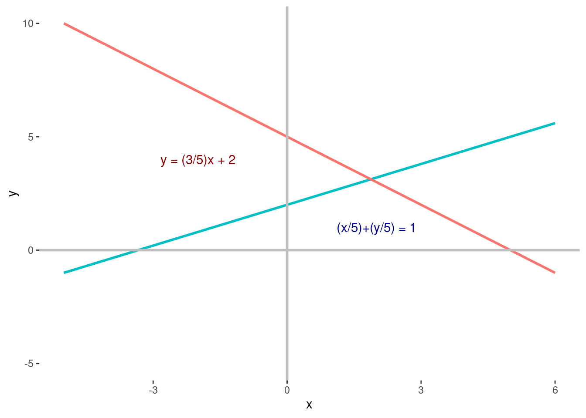
Utilizando álgebra lineal, podemos resolver las ecuaciones de la Fig. 1.4, es decir, podemos encontrar la intersección de estas dos líneas. Las ecuaciones para las dos líneas son las siguientes:
\[ y=\frac{3}{5}x+2, (1.2) \tag{2}\]
\[\frac{x}{5} + \frac{y}{5} = 1. (1.3) \tag{3}\]
Ahora, al resolver la ecuación \((1.3)\), obtenemos:
\[ x+y=5, \]
\[ ⟹x+(\frac{3}{5}x+2)=5, \]
\[ ⟹8x=15, \]
\[ ⟹x=1.875. \]
Poniendo el valor de \(x\) en la ecuación \((1.2)\), obtenemos \(y = 3.125\). Por lo tanto, el punto de intersección es \((x, y) = (1.875, 3.125)\).
Tensor y Rango de Tensor
Un tensor es un término general para vectores y matrices. Es la estructura de datos utilizada en modelos de ML. Un tensor puede tener cualquier dimensión. Un escalar es un tensor con cero dimensiones, un vector es un tensor con una dimensión y una matriz tiene dos dimensiones. Cualquier tensor con más de dos dimensiones se llama tensor n-dimensional. Vectores y matrices se discuten a continuación.
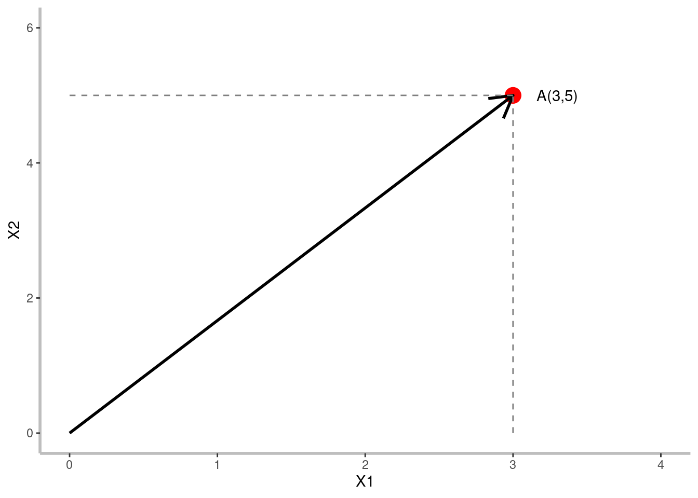
Vector
Un vector es un array unidimensional de números, términos o elementos. Las características del conjunto de datos se representan como vectores. Un vector se puede representar en dimensiones geométricas. Por ejemplo, un vector \([3, 5]\) se puede representar geométricamente en un espacio 2-dimensional, como se muestra en la Fig. 1.5. Este espacio se puede llamar espacio de vectores o espacio de características. En el espacio de vectores, un vector se puede visualizar como una línea con dirección y magnitud.
Matriz
Una matriz es un array bidimensional de escalares con una o más columnas y una o más filas. Un vector con más de una dimensión se llama matriz. El número de filas y columnas se expresa como la dimensión de esa matriz. Por ejemplo, una matriz con una dimensión de \(4 × 3\) contiene 4 filas y 3 columnas. Las operaciones de matrices proporcionan cálculos más eficientes que operaciones piecemeal para modelos de aprendizaje automático. Los matrices deben tener la misma dimensión para la suma y resta. Para la multiplicación de matrices, el tamaño de la columna del primer matriz y el tamaño de la fila del segundo matriz deben ser idénticos. Si se multiplica una matriz con dimensión \(m × n\) por una matriz con dimensión \(n × p\), entonces el resultado de esta multiplicación será una matriz con dimensión \(m × p\).
La ecuación 1.4 muestra la matriz \(A\) con una dimensión de \(2 × 3\) y la matriz \(B\) con una dimensión de \(3 × 1\). Por lo tanto, estas dos matrices se pueden multiplicar porque cumplen con la condición de multiplicación de matrices. El resultado de la multiplicación será la matriz \(C\), mostrada en la ecuación 1.5. Tiene una dimensión de \(2 × 1\).
\[A=\begin{bmatrix}1&2&3\\4&5&6\end{bmatrix}; B=\begin{bmatrix}11\\12\\13\end{bmatrix}. (1.4) \tag{4}\]
\[ Producto, C=\begin{bmatrix}74\\182\end{bmatrix}. (1.5) \tag{5}\]
Algunas matrices fundamentales se utilizan con frecuencia, como la matriz de fila, la matriz cuadrada, la matriz de columna, la matriz de identidad, etc. Por ejemplo, una matriz que consiste solo en una fila se conoce como matriz de fila, y una matriz que consiste solo en una columna se conoce como matriz de columna. Una matriz que consiste en un número igual de filas y columnas se llama matriz cuadrada. Una matriz cuadrada con todos los 1’s a lo largo de su diagonal principal y todos los 0’s en todos los elementos no diagonales es una matriz de identidad. Se muestran ejemplos de matrices diferentes en la Fig. 1.6.
Rango vs. Dimensión
Rango y dimensión son dos términos relacionados pero distinos en álgebra lineal, aunque a menudo se utilizan indistintamente en aprendizaje automático. En perspectiva de aprendizaje automático, cada columna de una matriz o tensor representa cada característica o subespacio. Por lo tanto, la dimensión de su columna (es decir, subespacio) será el rango de esa matriz o tensor.
Comparación entre Escalar, Vector, Matriz y Tensor
Un escalar es simplemente un valor numérico sin dirección asignada. Un vector es un array de números de una dimensión que denota una dirección específica. Una matriz es un array de números de dos dimensiones. Finalmente, un tensor es un array de datos de \(n\) dimensiones.
Según las cantidades mencionadas, escalares, vectores y matrices también pueden considerarse tensors, pero limitados a 0, 1 y 2 dimensiones, respectivamente. Las tablas 1.3 y 1.4 resumen las diferencias en el rango o dimensión de estas cuatro cantidades con ejemplos.
\[\text{Cuadrada 2x2}\begin{bmatrix}5&2\\-6&1\end{bmatrix};\\ \text{Rectangular 3x2}\begin{bmatrix}4&1\\2&-1\\-7&5\end{bmatrix};\\ \text{Ceros 3x5}\begin{bmatrix}0&0&0&0&0\\0&0&0&0&0\\0&0&0&0&0\end{bmatrix};\\ \text{Fila 1x4}\begin{bmatrix}5&-1&0&3\end{bmatrix};\\ \text{Columna 3x1}\begin{bmatrix}1\\2\\-7\end{bmatrix};\\ \text{Identidad 3x3}\begin{bmatrix}1&0&0\\0&1&0\\0&0&1\end{bmatrix}\]
| Rango/Dimensión | Objeto |
|---|---|
| 0 | Escalar |
| 1 | Vector |
| 2 o más | Matriz \(m * n\) |
| Cualquiera | Tensor |
| Escalar | Vector | Matriz | Tensor |
|---|---|---|---|
| \(1\) | \(\begin{bmatrix}1\\2\end{bmatrix}\) | \(\begin{bmatrix}1&2\\3&4\end{bmatrix}\) | \(\begin{bmatrix}\begin{bmatrix}1&2\end{bmatrix}&\begin{bmatrix}3&4\end{bmatrix}\\\begin{bmatrix}5&6\end{bmatrix}&\begin{bmatrix}7&8\end{bmatrix}\end{bmatrix}\) |
| Nombre | Definición |
|---|---|
| Media | El valor promedio aritmético. |
| Mediana | El valor del medio. |
| Moda | El valor más común. |
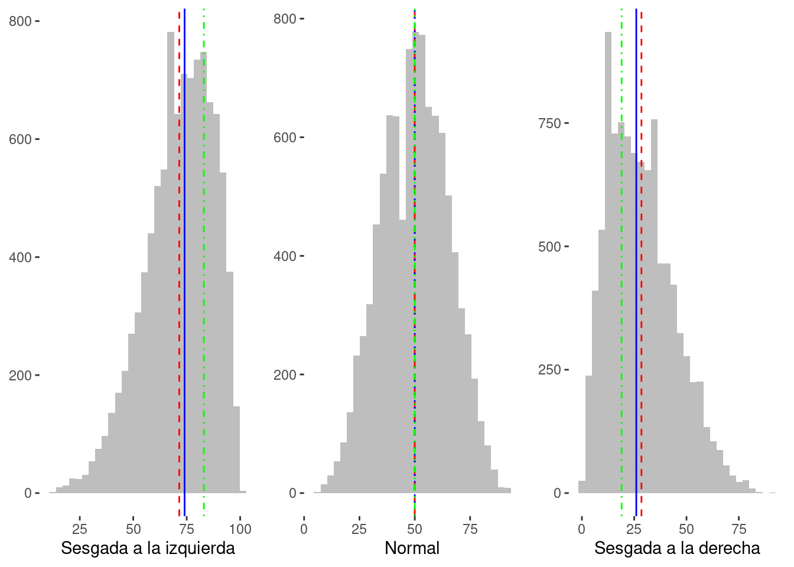
Estadística
La estadística es un campo vasto de las matemáticas que ayuda a organizar y analizar conjuntos de datos. El análisis de datos es mucho más fácil, rápido y preciso cuando las máquinas lo realizan. Por lo tanto, el aprendizaje automático se utiliza predominantemente para encontrar patrones dentro de los datos. La estadística es el componente fundamental del aprendizaje automático. Por lo tanto, es necesario tener conocimientos de términos estadísticos para aprovechar plenamente los beneficios del aprendizaje automático.
Medidas de Tendencia Central
Los tres términos estadísticos más comunes utilizados ampliamente en diversas aplicaciones son la media, la mediana y la moda. Estas tres funciones son las medidas de tendencia central de cualquier conjunto de datos, que denotan los valores centrales o medios del conjunto de datos. La tabla 1.5 establece las distinciones entre estos tres términos. Estas son las medidas de tendencia central de un conjunto de datos. La figura 1.7 proporciona una representación gráfica de la media, la mediana y la moda.
Se presentan tres ejemplos aquí y en la tabla 1.6. Vamos a considerar el primer conjunto de datos: \(\{1, 2, 9, 2, 13, 15\}\). Para encontrar la media de este conjunto de datos, debemos calcular la suma de los números. Aquí, la suma es 42. El conjunto de datos tiene seis puntos de datos. Por lo tanto, la media de este conjunto de datos será 42 ÷ 6 = 7. A continuación, para encontrar la mediana del conjunto de datos, el conjunto de datos necesita ser ordenado en orden ascendente: \(\{1, 2, 2, 9, 13, 15\}\).
| Conjuntos | {1,2,9,2,13,15} | {0,5,5,10} | {18,22,24,24,25} |
|---|---|---|---|
| Media | 7 | 5 | 22.6 |
| Mediana | 5.5 | 5 | 24 |
| Moda | 2 | 5 | 24 |
Dado que el número de puntos de datos es par, tomaremos los dos valores medios y los promediamos para calcular la mediana. Para este conjunto de datos, el valor de mediana sería \((2 + 9) ÷ 2 = 5.5\). Para la moda, el punto de datos más repetido debe considerarse. Aquí, \(2\) es la moda para este conjunto de datos. Este conjunto de datos está desviado hacia la izquierda, es decir, la distribución de los datos es más larga hacia la izquierda o tiene una cola izquierda larga.
De manera similar, si consideramos el conjunto de datos \(\{0, 5, 5, 10\}\), la media, la mediana y la moda todos son \(5\). Este conjunto de datos está distribuido normalmente. ¿Puedes calcular la media, la mediana y la moda para el conjunto de datos desviado hacia la derecha \(\{18, 22, 24, 24, 25\}\)?
Desviación Estándar
La desviación estándar (SD) se utiliza para medir la estimación de la variación de los puntos de datos en un conjunto de datos en relación con la media aritmética. Un conjunto de datos completo se conoce como una población, mientras que un subconjunto del conjunto de datos se conoce como una muestra. Las ecuaciones para calcular la desviación estándar de la población y la desviación estándar de la muestra se expresan como Ecuaciones 1.6 y 1.7, respectivamente.
\[ \text{Desviación estándar poblacional, } \sigma=\sqrt{\frac{1}{N}\sum_{i=1}^N{(x_i-\mu)^2}}. \tag{6}\]
Donde \(\sigma\) simboliza la desviación estándar de la población, \(i\) es una variable que enumera los puntos de datos, \(x_i\) denota cualquier punto de datos particular, \(\mu\) es la media aritmética de la población y \(N\) es el número total de puntos de datos en la población.
\[ \text{Desviación estándar muestral, } s=\sqrt{\frac{1}{N-1}\sum_{i=1}^N{(x_i-\overline{x})^2}}. \tag{7}\]
Donde \(s\) simboliza la desviación estándar de la muestra, \(i\) es una variable que enumera los puntos de datos, \(x_i\) denota cualquier punto de datos particular, \(x\) es la media aritmética de la muestra y \(N\) es el número total de puntos de datos en la muestra.
Un valor bajo de la desviación estándar indica que los puntos de datos se encuentran razonablemente cerca de la media del conjunto de datos, como se muestra en la Fig. 1.8a. Por otro lado, un valor alto de la desviación estándar indica que los puntos de datos se encuentran lejos de la media del conjunto de datos, cubriendo un rango amplio, como se muestra en la Fig. 1.8b.
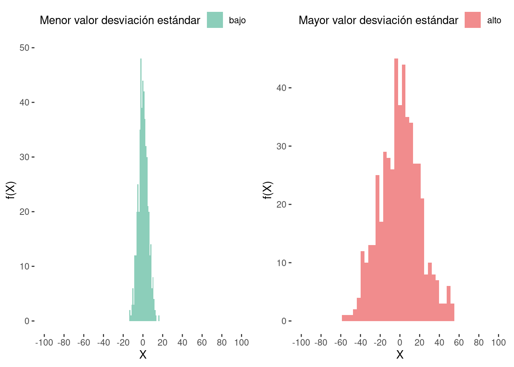
Correlación
La correlación muestra cómo de fuerte es la relación entre dos variables. Es una medida estadística de la relación entre dos (y a veces más) variables. Por ejemplo, si una persona puede nadar, probablemente puede sobrevivir después de caerse de un barco. Sin embargo, la correlación no es causalidad. Una correlación fuerte no siempre significa una relación fuerte entre dos variables; podría ser pura coincidencia. Un ejemplo famoso en este sentido es la correlación entre las ventas de helado y los ataques de tiburones. Hay una correlación fuerte entre las ventas de helado y los ataques de tiburones, pero los ataques de tiburones ciertamente no ocurren debido a las ventas de helado.
La correlación se puede clasificar de muchas maneras, como se describe en las secciones siguientes.
Correlación Positiva, Negativa y Cero
En una correlación positiva, la dirección del cambio es la misma para ambas variables, es decir, cuando el valor de una variable aumenta o disminuye, el valor de la otra variable también aumenta o disminuye, respectivamente. En una correlación negativa, la dirección del cambio es opuesta para ambas variables, es decir, cuando el valor de una variable aumenta, el valor de la otra variable disminuye, y viceversa. Para una correlación cero, las dos variables son independientes, es decir, no existe correlación entre ellas. Estos conceptos se presentan detalladamente en la Fig. 1.9.
Correlación Simple, Parcial y Multiple
La correlación entre dos variables es una correlación simple. Pero si el número de variables es de tres o más, es una correlación parcial o múltiple. En una correlación parcial, la correlación entre dos variables de interés se determina mientras se mantiene constante la otra variable. Por ejemplo, la correlación entre la cantidad de comida ingerida y la presión arterial para un grupo de edad específico se puede considerar como una correlación parcial. Cuando se determina la correlación entre tres o más variables al mismo tiempo, se llama correlación múltiple. Por ejemplo, la relación entre la cantidad de comida comida, la altura, el peso y la presión arterial se puede considerar como un caso de correlación múltiple.
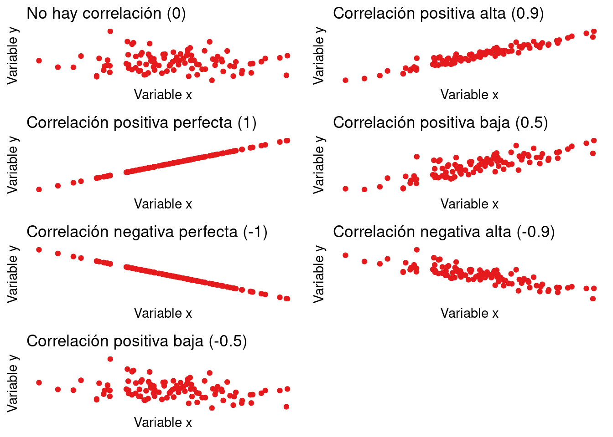
Correlación Lineal y No Lineal
Cuando la dirección del cambio es constante en todos los puntos para todas las variables, la correlación entre ellas es lineal. Si la dirección del cambio cambia, es decir, no es constante en todos los puntos, entonces se conoce como correlación no lineal, también conocida como correlación curvilínea. Un ejemplo de correlación no lineal sería la relación entre la satisfacción del cliente y la alegría del personal. La alegría del personal podría mejorar la experiencia del cliente, pero demasiada alegría podría tener un efecto negativo.
Coeficiente de Correlación
El coeficiente de correlación se utiliza para representar la correlación de manera numérica. Indica la fuerza de la relación entre las variables. Hay muchos tipos de coeficientes de correlación. Sin embargo, los dos más utilizados y más importantes se discuten brevemente aquí.
Coeficiente de Correlación de Pearson
El Coeficiente de Correlación de Pearson, también conocido como \(\text{r de Pearson}\), es el más popular y ampliamente utilizado para determinar la correlación lineal entre dos variables. En otras palabras, describe la fuerza de la relación entre dos variables basada en la dirección del cambio en las variables.
Para el coeficiente de correlación de una muestra,
\[ r_{xy}=\frac{Cov(x,y)}{s_xs_y}=\frac{\frac{\sum{(x_i-\overline{x})(y_i-\overline{y})}}{n-1}}{\sqrt{\frac{(x_i-\overline{x})^2}{n-1}}\sqrt{\frac{y_i-\overline{y})^2}{n-1}}}=\frac{\sum{(x_i-\overline{x})(y_i-\overline{y})}}{\sum{(x_i-\overline{x})^2(y_i-\overline{y})^2}} \tag{8}\]
Aquí, \(r_{xy}\) es el coeficiente de correlación de muestra entre dos variables \(x\) y \(y\); \(Cov(x, y)\) es la covarianza de muestra entre dos variables \(x\) y \(y\); \(s_x\) , \(s_y\) son la desviación estándar de muestra de \(x\) y \(y\); \(\overline{x}\), \(\overline{y}\) son el valor promedio de \(x\) y el valor promedio de \(y\); \(n\) es el número de puntos de datos en \(x\) y \(y\).
Para el coeficiente de correlación de una población,
\[ \rho_{xy}=\frac{Cov(x,y)}{\sigma_x\sigma_y}=\frac{\frac{\sum{(x_i-\overline{x})(y_i-\overline{y})}}{n}}{\sqrt{\frac{(x_i-\overline{x})^2}{n}}\sqrt{\frac{y_i-\overline{y})^2}{n}}}=\frac{\sum{(x_i-\overline{x})(y_i-\overline{y})}}{\sum{(x_i-\overline{x})^2(y_i-\overline{y})^2}} \tag{9}\]
Aquí, \(\rho_{xy}\) es el coeficiente de correlación de población entre dos variables \(x\) y \(y\); \(Cov(x, y)\) es la covarianza de población entre dos variables \(x\) y \(y\); \(\sigma_x\) , \(\sigma_y\) son la desviación estándar de población de \(x\) y \(y\); \(\overline{x}\), \(\overline{y}\) son el valor promedio de \(x\) y el valor promedio de \(y\) y \(n\) es el número de puntos de datos en \(x\) y \(y\).
El valor del coeficiente de correlación de Pearson varía entre -1 y 1. Aquí, -1 indica una correlación negativa perfecta, y el valor 1 indica una correlación positiva perfecta. Un coeficiente de correlación de 0 significa que no hay correlación. El coeficiente de correlación de Pearson se aplica cuando los datos de ambas variables provienen de una distribución normal, no hay outliers en los datos y la relación entre las dos variables es lineal.
Coeficiente de Correlación de Spearman
El Coeficiente de Correlación de Spearman determina la relación no-paramétrica entre los rangos de dos variables, es decir, el cálculo se realiza entre los rangos de las dos variables en lugar de los datos en sí mismos. Los rangos se determinan generalmente asignando el rango 1 al dato más pequeño, el rango 2 al siguiente dato más pequeño y así sucesivamente hasta el dato más grande. Por ejemplo, los datos contenidos en una variable son {55, 25, 78, 100, 96, 54}. Por lo tanto, el rango para esa variable particular será {3, 1, 4, 6, 5, 2}. Al calcular los rangos de ambas variables, se puede calcular el coeficiente de correlación de Spearman como sigue:
\[ \rho=1-\frac{6\sum{d_i^2}}{n(n^2-1)}. \tag{10}\]
Aquí, \(\rho\) es el coeficiente de correlación de Spearman, \(n\) es el número de puntos de datos en las variables y \(d_i\) es la diferencia de rango en el i-ésimo dato.
El coeficiente de correlación de Pearson determina la linealidad de la relación, mientras que el coeficiente de correlación de Spearman determina la monotonicidad de la relación. La representación gráfica de la monotonicidad de la relación se muestra en la Fig. 1.10.
A diferencia de una relación lineal, el ritmo de cambio de los datos no es siempre el mismo en una relación monotónica. Si el ritmo de cambio es en la misma dirección para ambas variables, la relación es positiva monotónica. Por otro lado, si la dirección es opuesta para ambas variables, la relación es negativa monotónica. La relación se llama no-monotónica cuando la dirección del cambio no es siempre la misma o opuesta, sino una combinación.
El valor del coeficiente de correlación de Spearman varía entre -1 y 1. Un valor de -1 indica una correlación negativa perfecta (correlación negativa de rango), un valor de 1 indica una correlación positiva perfecta (correlación positiva de rango) y un valor de 0 indica que no hay correlación. El coeficiente de correlación de Spearman se utiliza cuando se cumplen uno o más condiciones del coeficiente de correlación de Pearson.
Además de estos dos coeficientes de correlación, también se utilizan otros como: coeficiente de correlación de rango de Cramer (Cramer’s \(\tau\)), coeficiente de correlación de Kendall (Kendall’s \(\varphi\)), coeficiente biserial de punto. El uso de los diferentes coeficientes de correlación depende del tipo de aplicación y del tipo de datos.
Anomalías
Una anomalía es un punto de datos en el conjunto de datos que posee propiedades diferentes a todas las demás y, por lo tanto, varía significativamente del patrón de otras observaciones. Se trata del valor que tiene la mayor deviación del patrón típico seguido por todos los demás valores en el conjunto de datos.
Los algoritmos de ML tienen una alta sensibilidad a la distribución y el rango de valores de atributos. Las anomalías tienen la tendencia a confundir el proceso de entrenamiento del algoritmo, lo que eventualmente conduce a observaciones erróneas, resultados inexactos, tiempos de entrenamiento más largos y resultados pobres.
Considera el conjunto de datos \((x, y)\). Aquí, \(x\) es la tasa de consumo de agua por día y \(y\) es la tasa de consumo de electricidad por día. En la Figura 1.11, podemos ver que estos datos se distribuyen en 2 grupos diferentes, pero uno de los puntos de datos no puede agruparse con ninguno de estos grupos. Este punto de datos actúa como una anomalía en este caso.
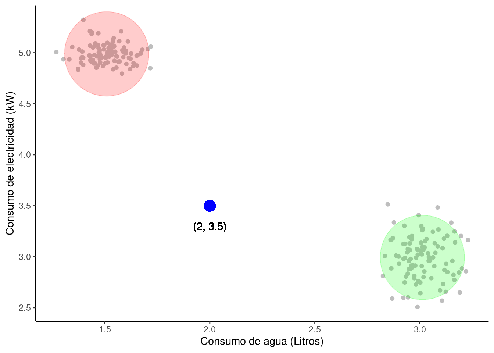
Es importante destacar que ruido y anomalías son dos cosas diferentes. Mientras que una anomalía es un valor de datos significativamente desviado, el ruido es simplemente un valor erróneo.
La Figura 1.12 visualiza la diferencia entre anomalía y ruido utilizando una señal.
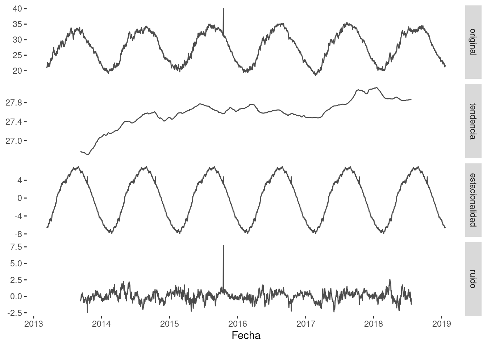
Considera una lista de 100 precios de casas, que principalmente incluye precios que van desde los 3000 hasta los 5000 dólares. Primero, hay una casa en la lista con un precio de 20,000 dólares. Luego, hay una casa en la lista con un precio de -100 dólares. 20,000 es una anomalía aquí, ya que difiere significativamente de los demás precios de casas. Por otro lado, -100 es un ruido, ya que el precio de algo no puede ser un valor negativo. Dado que la anomalía distorsiona significativamente la media aritmética del conjunto de datos y conduce a observaciones erróneas, eliminar anomalías del conjunto de datos es el requisito previo para lograr el resultado correcto.
Histograma
Un histograma se asemeja a un gráfico de columnas y representa la distribución de frecuencia de los datos en barras verticales en un sistema de ejes bidimensional. Los histogramas tienen la capacidad de expresar los datos de manera estructurada, lo que facilita la visualización de datos. Las barras en un histograma se colocan al lado uno del otro sin espacios en blanco entre ellas. El histograma agrupa los datos en barras, lo que proporciona una comprensión clara de la distribución de los datos. La disposición también proporciona una comprensión clara de la distribución de los datos según sus características en el conjunto de datos.
La Figura 1.13 ilustra tres tipos de histogramas, con una distribución desviada a la izquierda, una distribución normal y una distribución desviada a la derecha.
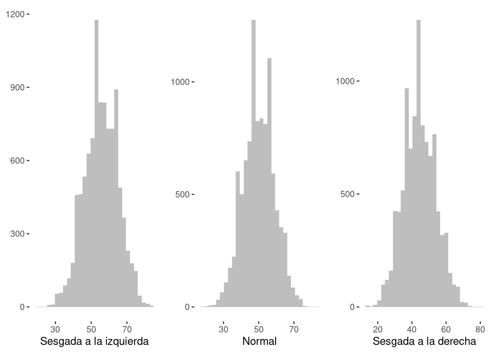
Errores
El conocimiento de los errores es útil al evaluar la precisión de un modelo de aprendizaje automático (ML). En particular, cuando se prueba el modelo entrenado contra un conjunto de datos de prueba, se compara el resultado del modelo con el resultado conocido del conjunto de datos de prueba. La deviación entre los datos predichos y los datos reales se conoce como el error. Si el error está dentro de los límites tolerables, entonces el modelo está listo para usar; en caso contrario, debe ser reentrenado para mejorar su precisión.
Hay varios métodos para estimar la precisión del rendimiento de un modelo de ML. Algunos de los métodos más populares son medir el porcentaje de error absoluto promedio (MAPE), el error cuadrado medio (MSE), el error absoluto medio (MAE) y el error raiz cuadrado medio (RMSE). En las ecuaciones de la Tabla 1.7, \(n\) representa el número total de veces que ocurre la iteración, \(t\) representa una iteración específica o una instancia del conjunto de datos, \(e_t\) es la diferencia entre el valor real y el valor predicho del punto de datos, y \(y_t\) es el valor real.
| Nombre del error | Ecuación |
|---|---|
| Error cuadrático medio | \[ MSE=\frac{1}{n}\sum_{t=1}^ne_t^2 \] |
| Raíz del error cuadrático medio | \[ RMSE=\sqrt{\frac{1}{n}\sum_{t=1}^ne_t^2} \] |
| Error absoluto medio | \[ MAE=\sqrt{\frac{1}{n}\sum_{t=1}^n|e_t|} \] |
| Error porcentual absoluto medio | \[ MAPE=\frac{100%}{n}\sqrt{\sum_{t=1}^n|\frac{e_t}{y_t}|} \] |
El concepto de errores es vital para crear un modelo de ML preciso para varios propósitos. Estos se describen con mayor profundidad en la Sección 2.2 del Capítulo 2.
Teoría de la Probabilidad
La probabilidad es una medida de la probabilidad de que un evento específico ocurra.
La probabilidad se encuentra entre 0 y 1, donde 0 significa que el evento nunca ocurrirá y 1 significa que el evento es seguro de ocurrir. La probabilidad se define como la ratio del número de resultados deseados al número total de resultados.
\[P(A)=\frac{n(A)}{n}. \tag{11}\]
Donde \(P (A)\) denota la probabilidad de un evento \(A\), \(n (A)\) denota el número de ocurrencias del evento \(A\) y \(n\) denota el número total de resultados posibles, también conocido como el espacio muestral.
Vamos a ver un ejemplo común. Un dado estándar con seis caras contiene un número entre 1 y 6 en cada una de las caras. Cuando se lanza un dado, cualquier uno de los seis números puede aparecer en la cara superior. Por lo tanto, la probabilidad de obtener un 6 en el dado se determina según se muestra en la ecuación 1.12.
\[ P(6)=\frac{1}{6}=0.167=16.7\text{%} \tag{12}\]
La teoría de la probabilidad es el campo que abarca las matemáticas relacionadas con la probabilidad. Cualquier algoritmo de aprendizaje depende de la suposición probabilística de los datos. Como los modelos de ML manejan la incertidumbre de los datos, el ruido, la distribución de probabilidad, etc., varios conceptos fundamentales de la teoría de la probabilidad son necesarios, que se cubren en esta sección 1.5.3.
Distribución de Probabilidad
En la teoría de la probabilidad, todos los posibles resultados numéricos de cualquier experimento se representan mediante variables aleatorias. Una función de distribución de probabilidad produce los valores numéricos posibles de una variable aleatoria dentro de un rango específico. Las variables aleatorias son de dos tipos: discretas y continuas. Por lo tanto, la distribución de probabilidad se puede categorizar en dos tipos según el tipo de variable aleatoria involucrada—función de densidad de probabilidad y función de masa de probabilidad.
Función de Densidad de Probabilidad
Los valores numéricos posibles de una variable aleatoria continua se pueden calcular utilizando la función de densidad de probabilidad (PDF). La representación gráfica de esta distribución es continua. Por ejemplo, en la Figura 1.14, cuando un modelo busca la probabilidad de la altura de las personas en el rango de 160-170 cm, podría utilizar una PDF para indicar la probabilidad total de que el rango de la variable aleatoria continua ocurra. Aquí, f (x) es la PDF de la variable aleatoria x.
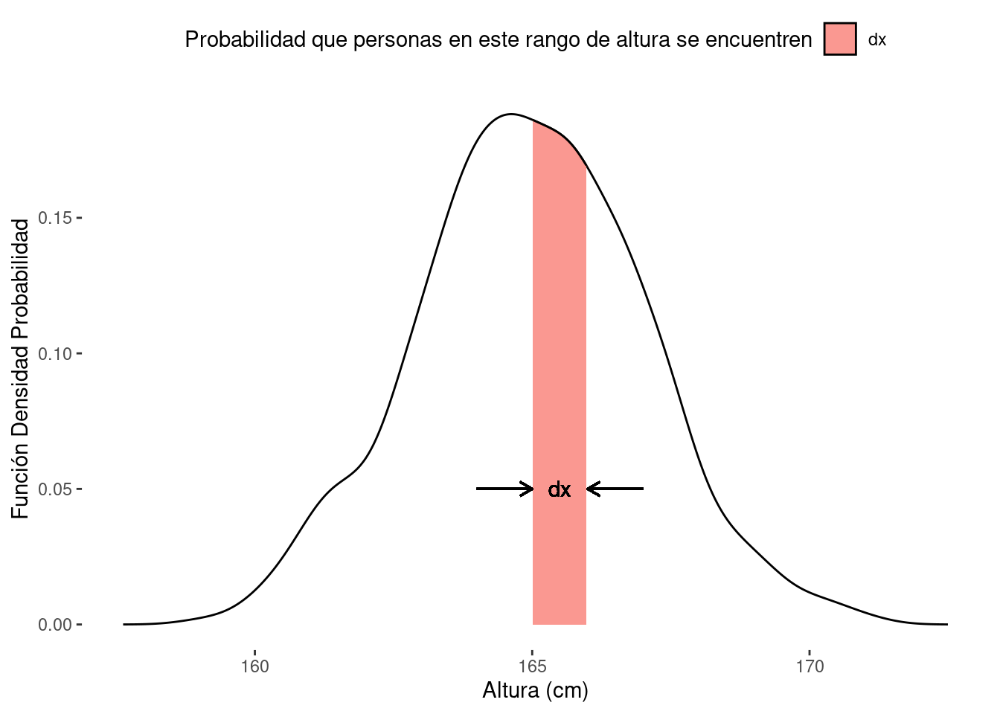
Función de Masa de Probabilidad
Cuando se implementa una función para encontrar los valores numéricos posibles de una variable aleatoria discreta, la función se conoce como función de masa de probabilidad (PMF). Las variables aleatorias discretas tienen un número finito de valores. Por lo tanto, no obtenemos una curva continua cuando se representa gráficamente la PMF. Por ejemplo, si consideramos el lanzamiento de un dado de seis caras, tendremos un número finito de resultados, como se muestra en la Figura 1.15.
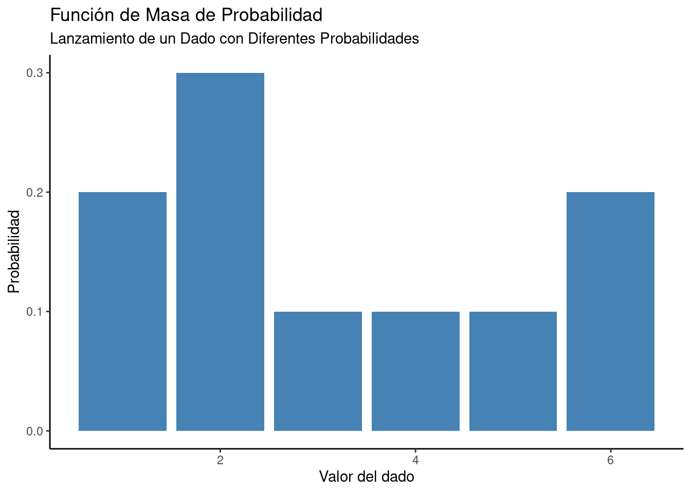
Distribución Gaussiana o Distribución Normal
La probabilidad acumulada de variables aleatorias normales se presenta en la distribución Gaussiana o normal. El gráfico depende de la media y la distribución estándar de los datos. En una distribución estándar, la media de los datos es 0 y la desviación estándar es 1. Un gráfico de distribución normal es una curva en forma de campana, como se muestra en la Fig. 1.16. Por lo tanto, también se conoce como distribución de curva en forma de campana.
La ecuación que representa la distribución Gaussiana o normal es:
\[ P(x)=\frac{1}{\alpha\sqrt{2\pi}}e^{\frac{-(x+\mu)^2}{2\alpha^2}} \tag{13}\]
Donde \(P(x)\) denota la densidad de probabilidad de la distribución normal, \(α\) denota la desviación estándar, \(μ\) denota la media del conjunto de datos y \(x\) denota un punto de datos.
Distribución de Bernoulli
Una distribución de probabilidad sobre el ensayo de Bernoulli es la distribución de Bernoulli. El ensayo de Bernoulli es un experimento o evento que solo tiene dos resultados. Por ejemplo, lanzar una moneda se puede considerar como un ensayo de Bernoulli, ya que solo puede tener dos resultados - cara o sello. Normalmente, los resultados se observan en términos de éxito o fracaso. En este caso, podemos decir que obtener una cara será un éxito. Por otro lado, no obtener una cara o obtener un sello sería un fracaso. La distribución de Bernoulli se ha visualizado en la Fig. 1.17, que plotea la probabilidad de dos ensayos.
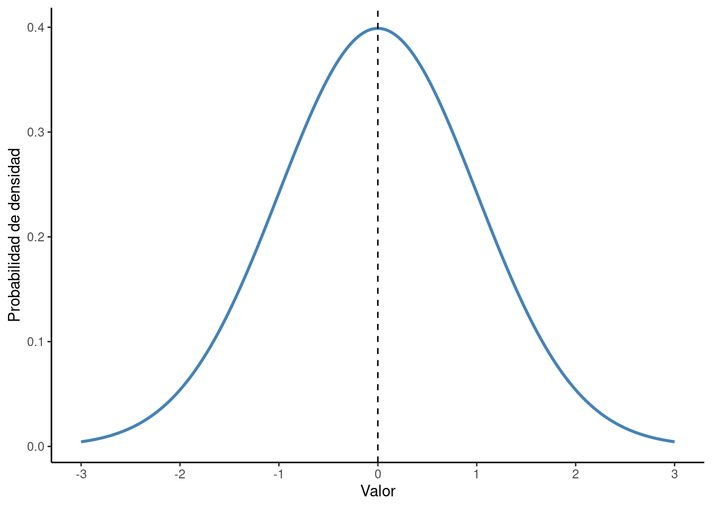
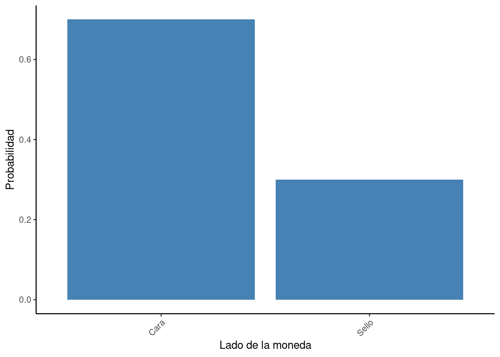
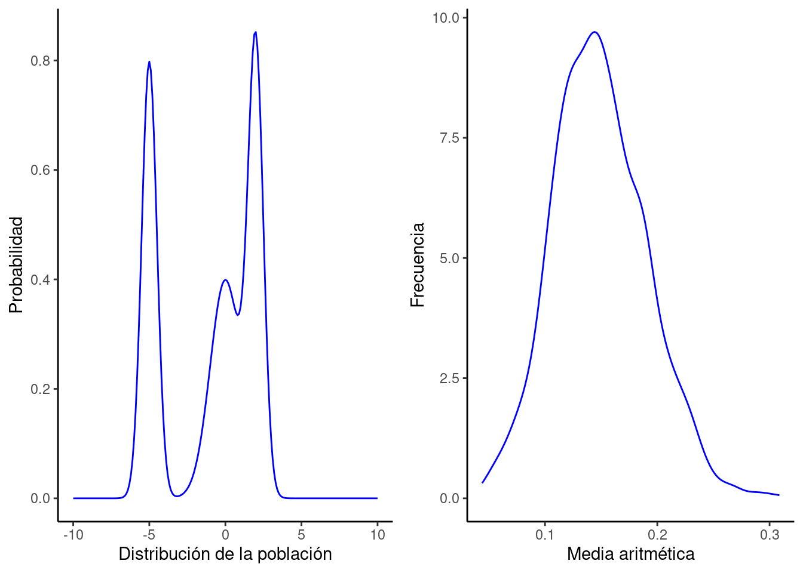
Teorema del Límite Central
Considera un conjunto de datos grande de cualquier distribución. El teorema del límite central afirma que, independientemente de la distribución de los números en el conjunto de datos, la media aritmética de las muestras de datos extraídas del conjunto de datos principal tendrá una distribución normal. Cuanto mayor sea el tamaño de la muestra, más cerca estará la media de una distribución normal. El teorema se ha demostrado en la Fig. 1.18. Se puede ver que la población no sigue una distribución normal, pero cuando se muestrea la media, la muestra forma una distribución normal.
Cálculo
El cálculo de Newton es ampliamente útil para resolver una variedad de problemas. Uno de los algoritmos más populares de ML es el algoritmo de descenso de gradientes. El algoritmo de descenso de gradientes, junto con la retropropagación (backpropagation), es útil en el proceso de entrenamiento de modelos de ML, que dependen intensivamente del cálculo. Por lo tanto, el cálculo diferencial, el cálculo integral y las ecuaciones diferenciales son todos aspectos necesarios para familiarizarse con antes de estudiar ML.
Derivada y Pendiente
La derivada se define como la tasa de cambio de una función con respecto a una variable. Por ejemplo, la velocidad de un coche es la derivada de la desplazamiento del coche con respecto al tiempo. La derivada es equivalente a la pendiente de una línea en un punto específico. La pendiente ayuda a visualizar cómo empinada es una línea. Una línea con una pendiente más alta es más empinada que una línea con una pendiente más baja. El concepto de pendiente se muestra en la Figura 1.19.
\[ pendiente, m =\frac{\Delta{y}}{\Delta{x}} \tag{14}\]
Se utiliza ampliamente la derivada en ML, especialmente en problemas de optimización, como el descenso de gradientes. Por ejemplo, en el descenso de gradientes, se utilizan derivadas para encontrar el camino más empinado para maximizar o minimizar una función objetivo (por ejemplo, la precisión o función de error de un modelo).
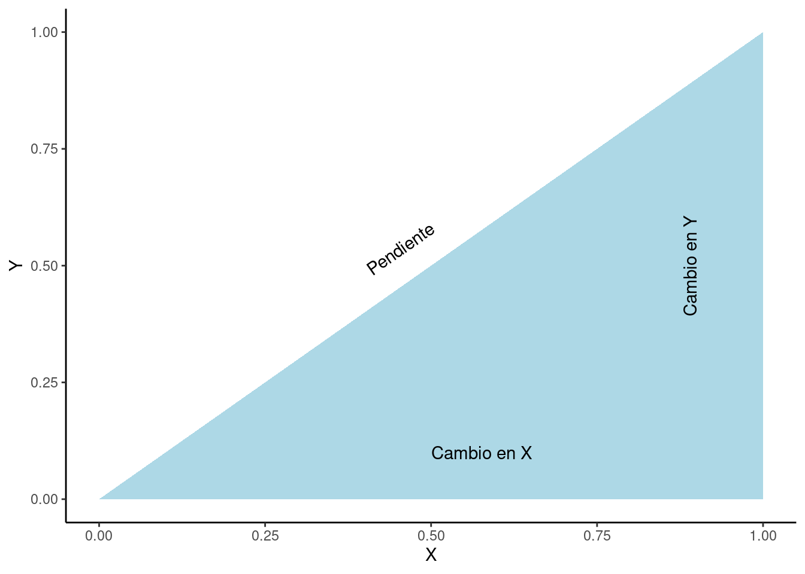
Derivadas Parciales
Si una función depende de dos o más variables, entonces la derivada parcial de la función es su derivada con respecto a una de las variables, manteniendo las otras variables constantes. Las derivadas parciales se requieren para técnicas de optimización en ML, que utilizan derivadas parciales para ajustar los pesos para cumplir con la función objetivo. Las funciones objetivo son diferentes para cada problema. Por lo tanto, la derivada parcial ayuda a decidir si aumentar o disminuir los pesos para hacer un ajuste a la función objetivo.
Máximos y Mínimos
Para una función no lineal, el pico más alto o el valor máximo se refiere a los máximos, y el pico más bajo o el valor mínimo se refiere a los mínimos. En otras palabras, el punto en el que la derivada de una función es cero se define como los máximos o los mínimos. Estos son los puntos en los que el valor de la función se mantiene constante, es decir, la tasa de cambio es cero. Este concepto de máximos y mínimos es necesario para minimizar la función de coste (diferencia entre el valor verdadero y el valor de salida) de cualquier modelo de ML. Un mínimo local es el valor de una función que es menor que los puntos vecinos, pero no necesariamente menor que todos los puntos en el espacio de solución. Un mínimo global es el valor más pequeño de la función que existe en ese espacio de solución. El caso es el mismo para máximos globales y locales. Un máximo local es el valor de una función que es mayor que los puntos vecinos, pero no necesariamente mayor que todos los puntos en el espacio de solución. Un máximo global es el valor más grande de la función que existe en ese espacio de solución. La figura 1.20 muestra máximos y mínimos globales y locales en un espacio de solución.
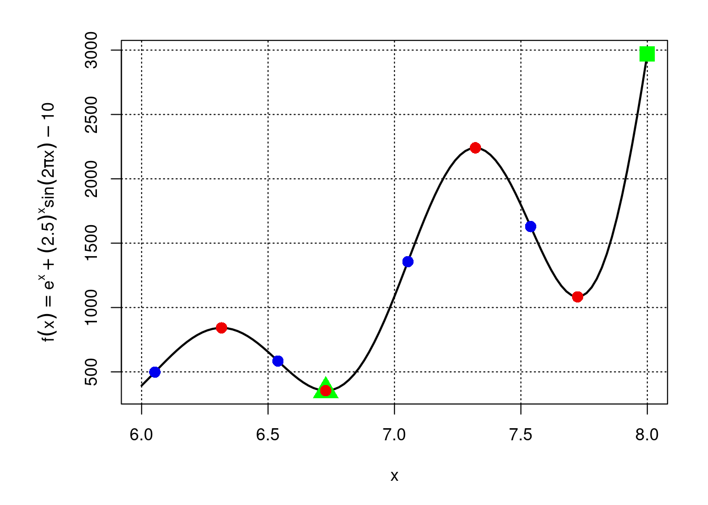
Ecuación Diferencial
Una ecuación diferencial (ED) representa la relación entre una o más funciones y sus derivadas con respecto a una o más variables. Las EDs son muy útiles en el modelado de sistemas y, por lo tanto, se pueden utilizar en ML para modelado dinámico, especialmente en redes neuronales.
El siguiente es un ejemplo de una ecuación diferencial:
\[ \frac{d^2y}{dx^2}+4=1. \tag{15}\]
Orden y Grado
En ecuaciones diferenciales, el orden más alto de la derivada utilizada en la ecuación es el orden de la ecuación. El grado de una ecuación diferencial es el poder de su derivada más alta. Por ejemplo, esta es una ecuación diferencial de cuarto orden y primer grado:
\[ \frac{d^4y}{dx^4}+(\frac{d^2y}{dx^2})^2+4\frac{dy}{dx}+6x=0. \tag{16}\]
aquí, la derivada más alta es \(\frac{d^4y}{dx^4}\). El orden de la derivada más alta es 4, por lo que esta es una ecuación diferencial de cuarto orden. El poder de la derivada más alta es 1, y por lo tanto, esta es una ecuación diferencial de primer grado. Algunos ejemplos adicionales se muestran en la Tabla 1.8
| Ecuación | Orden | Grado |
|---|---|---|
| \[ \frac{d^3y}{dx^3}+6x\frac{dy}{dx}=e^y \] | 3 | 1 |
| \[ \frac{dy}{dx}+(\frac{d^2y}{dx^2})^3=7x \] | 2 | 3 |
| \[ \frac{d^2y}{dx^2}+(\frac{dy}{dx})^3=7x \] | 2 | 1 |
Ecuación Diferencial Ordinaria y Parcial
Como se discutió anteriormente, las ecuaciones diferenciales pueden tener más de una variable. Cuando una ecuación consiste en diferenciales con respecto a una variable, se llama ecuación diferencial ordinaria (EDO). Por otro lado, cuando la ecuación involucra diferenciales con respecto a más de una variable, se conoce como ecuación diferencial parcial (EDP). El símbolo \(d\) se utiliza para ecuaciones diferenciales ordinarias y el símbolo \(\partial\) se utiliza para ecuaciones diferenciales parciales.
Por ejemplo: \(\frac{d^2y}{dx^2} + \frac{dy}{dx} + 1 = 0\) es una EDO y \(\frac{\partial^2y}{\partial{x}^2} + \frac{\partial{y}}{\partial{x}} + 1 = 0\) es una EDP.
Ecuación Lineal y No Lineal
Las ecuaciones pueden tener variables dependientes e independientes. Estas variables pueden tener grados más altos dependiendo del tipo de ecuación. Cuando las ecuaciones diferenciales contienen variables dependientes con grado 1, se consideran ecuaciones diferenciales lineales. Por otro lado, si las ecuaciones diferenciales contienen variables dependientes con un grado más alto, se consideran ecuaciones diferenciales no lineales.
Por ejemplo, en la ecuación \(\frac{d^2y}{dx^2} + \frac{dy}{dx} + 1 = 0\), el grado de la derivada más alta es 1. Por lo tanto, es una ecuación lineal. De nuevo, la ecuación \((\frac{dy}{dx})^2 + x = 0\) tiene 2 como su grado de la derivada más alta. Por lo tanto, es un ejemplo de ecuación no lineal.
Hasta aquí tienes los conceptos básicos que deberías revisar, repasar, aprender o profundizar, para lograr aplicar ML.
Cómo citar
BibTeX
@online{chiquito_valencia2025,
author = {Chiquito Valencia, Cristian},
title = {Introducción Al {Machine} {Learning}},
date = {2025-02-05},
url = {https://cchiquitovalencia.github.io/posts/2025-02-05-intro_ml/},
langid = {en}
}
Por favor, cita este trabajo como:
Chiquito Valencia, Cristian. 2025. “Introducción Al Machine
Learning.” February 5, 2025. https://cchiquitovalencia.github.io/posts/2025-02-05-intro_ml/.